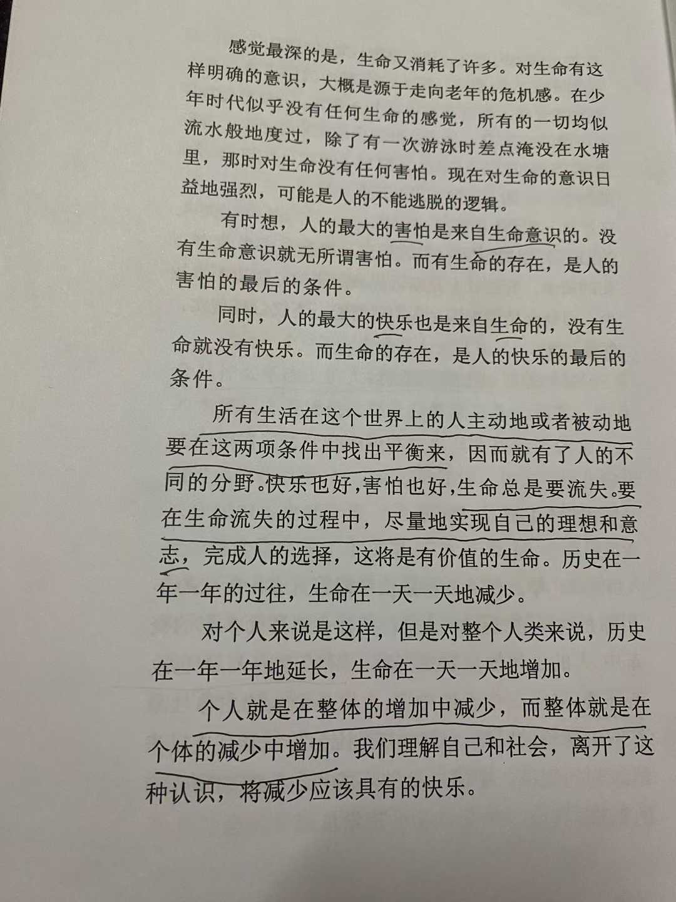
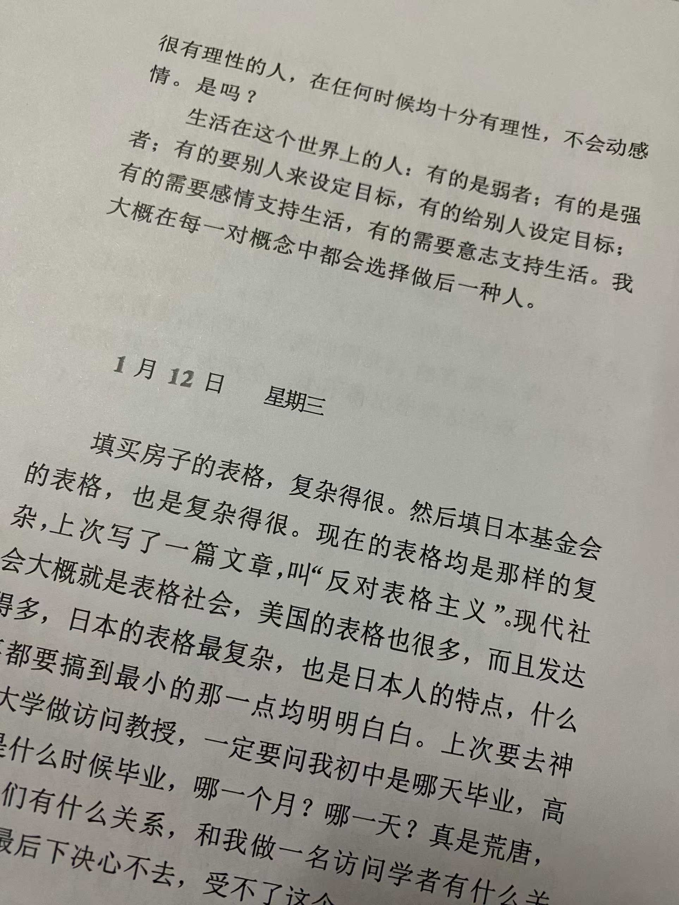
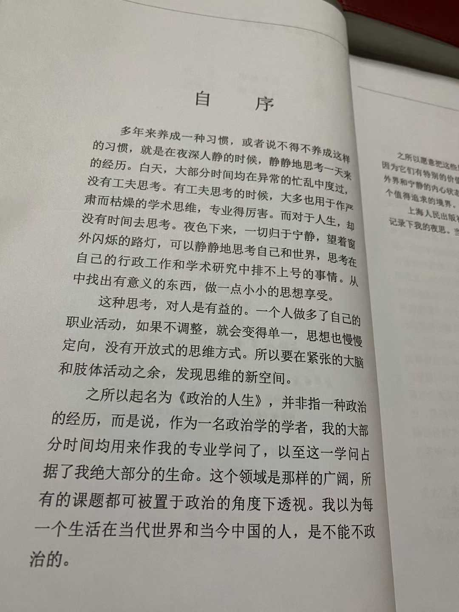

纵横千里独行客 何惧前路雨潇潇
又一年生日
常有朋友与前辈建议，将这几年的经历、思考与文字整理成书。那时正在读王教授的《政治的人生》，心里默默埋下一粒种子。人在深夜，难免有些“矫情”，思绪无处置放，便索性当随笔写下。
  
我在二五年六月发过一条朋友圈：“封笔半年，专心干一件事。”其实就是在思考 应该如何去写这些事情 磕磕绊绊，如今总算有了大纲。
分享这些，只是想告诉大家：这件事，我有在做。
有些事，需要坚持去做。哪怕短期内没有回响，哪怕痛苦到看不到希望，但还是要坚持。优质感情的磨合、人的意志力、对痛苦的承受力，都需要细水长流的坚持。慢慢地，曾经觉得烦躁的事情，后来无感了；曾经难以承受的痛苦，后来习惯了。急于求成的人，往往迅速耗尽意志力，然后一蹶不振。
文字我会继续记录 但何时成书？或许五年，或许是十年，抑或是真正功成名就的那一天。
“德不配位，必有灾殃”——这句话我一直谨记。自知阅历尚浅，唯一能做的，不过是站在巨人的肩膀上，慢慢看清世界的轮廓。更由衷感念各位前辈 在我前行路上给予提携和指点，帮我绕过了许多弯路
在这个川流不息的时代里，慢慢走，用心活，也很好。祝我们都能捕捉并珍惜生命中那些美好而明亮的瞬间。
新的一岁——
敬过往，爱当下，向未来。